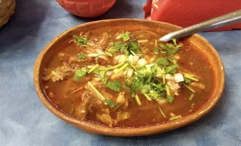
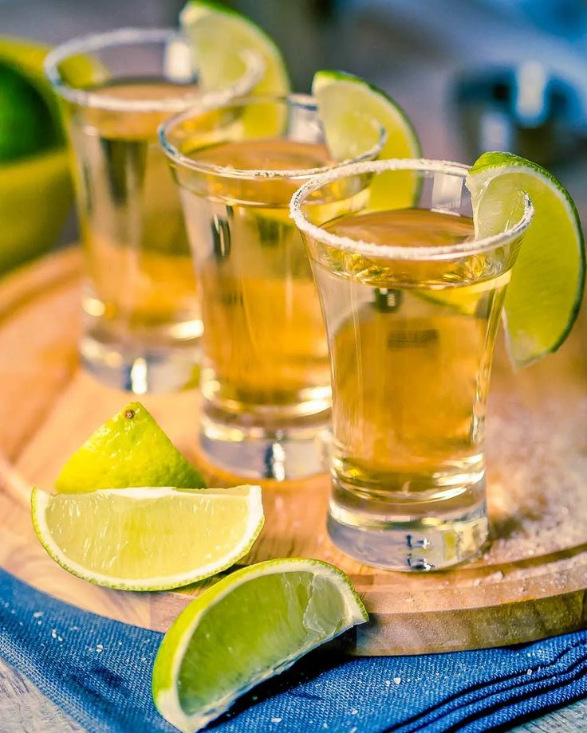

Gastronomía y Cultura


La cocina jalisciense ofrece una gran variedad de platillos y una cultura unica.
Gastronomía
Birria jalisciense: platillo emblemático preparado con carne de res o chivo, acompañado de tortillas y salsa.
Tortas ahogadas: pan birote relleno de carnitas, bañado en salsa de chile de árbol.
Dulces típicos: como las cajetas, obleas y jamoncillos.
Tequila artesanal: bebida insignia, elaborada a partir del agave azul, con procesos que van desde la tahona tradicional hasta la destilación moderna.
Cultura
Mariachi: música tradicional mexicana que acompaña fiestas y celebraciones en la plaza principal.
Fiestas patronales: en honor a Santiago Apóstol, con procesiones, danzas y eventos culturales.
Artesanías: piezas de barro, textiles y objetos inspirados en el agave y el tequila.
Museo Nacional del Tequila: espacio que preserva la historia y evolución de la bebida.